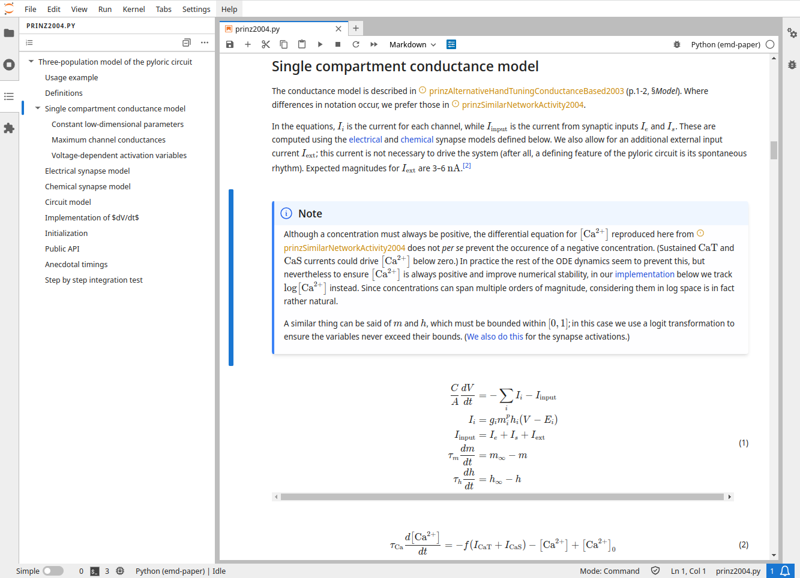
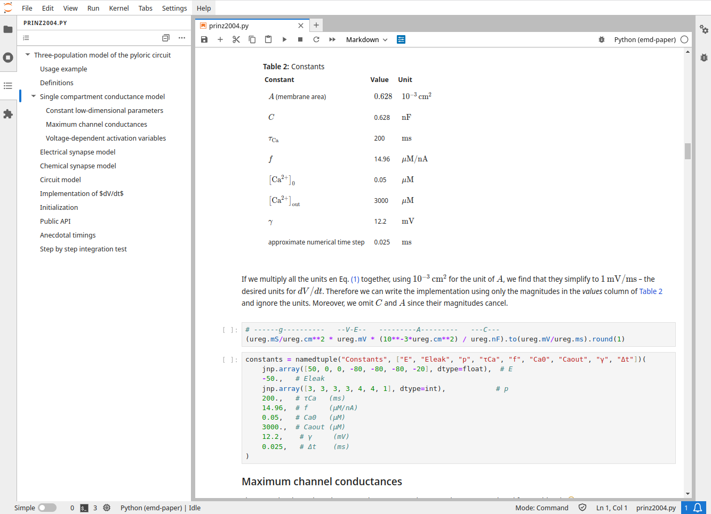

Pyloric network simulator#
The pyloric circuit model described by Prinz at al.[1] continues to be studied today, both as an instructive model of an interesting biological process[2] and also as a case study of functional diversity in computational models.[3]
This repository is a reimplementation of the model in pure Python, using JAX to achieve comparable execution speeds as C/C++.
It is especially meant for users who want to modify the code themselves, or integrate as part of a Python stack.

Other implementations:#
A variant of the original C++ implementation used in a later study.
(As of July 2024 the link above seems dead, but this ModelDB page is still available.)
In Open source brain. This implementation is designed for interoperability between different neuron simulation solutions, such as NeuroML and NEURON.
As an motivating example for the Brian 2 simulator.
In a tutorial for the xolotl simulator.
Overview#
Main features#
Easy to install
From PyPI:
pip install pyloric-network-simulator "jax[cpu]"As inlined source: Copy the handful of files under pyloric_simulator folder into your project.
Easy to use
Import as any Python package:
from pyloric_network_simulator import prinz2004No need to learn about C linkers or HDF5 file formats.
No dependency on a neuron simulator library
This can be useful to use the model in conjunction with generic numerical toolboxes.
However it also means we don’t benefit from the ecosystem of neuron simulators.
On-demand thermalization
The original implementation performs an initial sweep over 20 million parameter sets for individual neurons, integrating each for a long period (~ 5 min simulated time) in order to find their realistic states. This makes sense if we want to systematically test all of those models, but it takes a lot of time, uses a lot of memory, and limits later simulations to those parameters for which we have thermalizations.
The Brian and xolotl implementations are meant as illustrative examples, and to the best of my understanding don’t perform any thermalization.
Here models are thermalized on demand the first time a new parameter combination is used. The result is then saved to an on-disk cache (managed with
shelve). This makes thermalizations completely transparent to the user (modulo a 5–10 min wait time) and ensures that it is performed only on those models which we actually need. This is a much more efficient approach ifWe will need to execute the model with a limited number of parameters (e.g. because the parameter ranges we want to explore have already been identified).
We want to search the parameter space more efficiently, for example with a gradient-based parameter optimizer. This can allow for much higher resolutions in parameter space, while still requiring much fewer model simulations than a grid search.
Fast
Special care was taken to use vectorized operations wherever possible, and JAX’s JIT capability is used to compile the model to C at runtime. This should provide speeds comparable with a plain C/C++ implementation. Use of JAX also opens the possibility of using GPU acceleration for models with many neurons.
Fully documented
The original specification of the pyloric circuit model is spread across at least three resources[1].
Here all definitions are in one place, fully referenced and using consistent notation. Since the documentation is inlined into the code, definitions appear right next to where they are actually used.
Easy to modify
Users have full control over the circuit topology: number, size and type of populations, as well as the synaptic conductivities, are all specified when creating the model:
Standard pyloric circuit with 4 populations
model = Prinz2004(pop_sizes = {"PD": 2, "AB": 1, "LP": 1, "PY": 5}, # Pop. sizes gs = [ [ 0 , 0 , 3 , 0 ], # Syn. conductivities [ 0 , 0 , 3 , 3 ], [ 3 , 3 , 0 , 3 ], [ 3 , 3 , 3 , 0 ] ], g_ion = neuron_models.loc[["AB/PD 3", "AB/PD 3", "LP 1", "PY 5"]] # Neuron types )Reduced pyloric circuit with 2 populations
model = Prinz2004(pop_sizes = {"AB": 1, "LP": 1}, gs = [ [ 0 , 3 ], [ 3 , 0 ] ], g_ion = neuron_models.loc[["AB/PD 3", "LP 1"]] )
Easy to understand
Python is easier to read than C++ and familiar to more users (especially to scientists).
The code structure closely follows how the model is defined in the papers, making it easier to understand each component.
The entire model fits in a single code file.
The code file can be opened in a Jupyter Notebook,[4] providing structure and formatted documentation explaining each code section in detail.
 
Limitation#
The principal and very important disadvantage of this implementation is that currently it was only used for one example in one paper, in contrast to the original C/C++ implementation which has received many years of focussed attention. This implementation also has not been exhaustively tested for consistency with the original.
Basic qualitative comparisons suggests that the single neuron conductance models closely reproduce the results reported by Prinz et al.
Some differences in the simulated activity (with respect to the original implementation) do seem to occur when neuron models are combined into a circuit.
Code structure#
The code uses MyST Markdown and Jupytext, which enables a literate programming style by embedding rich Markdown comments in Python comments. The result is documentation and code which are located as near as possible. This is especially useful for scientific programming, where the code itself may not be especially complicated, but may be the result of complex arguments which need mathematics or figures to express intelligibly.
Literate code files like prinz2004.py are multi-purpose:
Import them as normal Python modules.
Run them as normal Python modules on the command line.
When opened in Jupyter Notebook or VS Code, all markdown comments are rendered inline, placing math and figures right there alongside the code.
Export to HTML book format (this is how we produce the documentation).
Installation#
From the PyPI index#
pip install pyloric-network-simulator "jax[cpu]"
As inlined source#
Since the entire project is just a few files, it is completely legitimate to just inline the entire thing into your project. This has the advantage that it makes it easy for you to peruse the code and inlined documentation, and to make changes to suit your needs.
This is the installation method I recommend, since it encourages you to take ownership of the code rather than trust it blindly. It also ensures that the exact version you use is archived within your project.
Download the most recent release.
Alternatively, you can usegit-subrepoto clone this repository into a subdirectory of your project. This has the advantage of later allowing you to pull updates.Unpack into your project directory, so it looks something like
<my-project> ├─ ... └─ pyloric_simulator ├─ config/ ├─ prinz2004.py ├─ requirements.txt └─ ...
or
<my-project> ├─ ... └─ lib └─ pyloric_simulator ├─ config/ ├─ prinz2004.py ├─ requirements.txt └─ ...Install the requirements
pip install -r ./pyloric_simulator/requirements.txt
Add the contents of
requirements.txtto your own dependencies.
To use the prinz2004.py module, just import it as you would any of your own modules.
Developer alternative: as a separate editable package#
If you want to develop the simulator, you may prefer to clone the repository and make it a dependency to your project.
Choose a location for the repo
cd ~/code
Clone the repo
git clone git@github.com:alcrene/pyloric-network-simulator.git
Install in development mode
pip install -e ./pyloric-network-simulator
Usage#
If you installed as a package: from pyloric_network_simulator import prinz2004.
If you installed as inlined source: The exact import statement will depend on where you placed the unpacked files.
It may look like from my_project.pyloric_network_simulator import prinz2004.
See the documentation for further instructions and examples.
Building the documentation#
Ensure the .md and .py files are synchronized
jupytext --sync pyloric_simulator/prinz2004.md
Build the documentation using
jb build .
Push to GitHub Pages
ghp-import -n -p -f _build/html